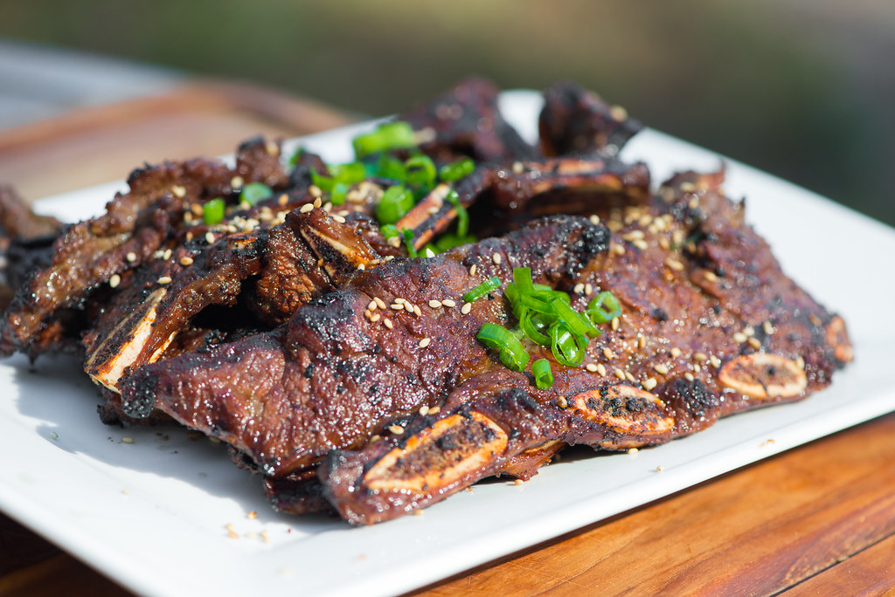

<html lang="en"></html>
    <head>
        <meta charset="utf-8">
        <title>Korean Short Ribs</title>
    </head>
    <body>
        <h1>Korean Short Ribs</h1>
        
        <h2>What Are Korean Short Ribs?</h2>
            <p>Korean short ribs also known as <strong>"Galbi"</strong>, which is the Korean word for "rib", is made with beef short ribs.</p>
        <h3>Ingredients f or Korean Short Ribs</h3>
            <p><ul>
                <li>5 pounds beef short ribs, cut flanken style</li>
                <li>5 cloves garlic</li>
                <li>1 onion, coarsely chopped</li>
                <li>1 Asian pear, cored and cubed</li>
                <li>1 cup soy sauce (such as Kikkoman®)</li>
                <li>1 cup brown sugar</li>
                <li>¼ cup honey</li>
                <li>¼ cup sesame oil</li>
                <li>Black pepper to taste</li>
            </ul></p>
        <h3>Steps to make Galbi</h3>
            <p><ol>
                <li>Place the ribs in a large stockpot and cover with cold water. Soak ribs, refrigerated, for 1 hour to pull out any blood. Drain.</li>
                <li>Combine garlic, onion, and Asian pear in a blender and puree. Pour into a large bowl and stir in the soy sauce, brown sugar, honey, sesame oil, and black pepper. Marinate ribs in the soy mixture, covered, overnight.</li>
                <li>Preheat an outdoor grill for high heat, and lightly oil the grate.</li>
                <li>Grill ribs until the meat is tender and the outside is crusty, 5 to 10 minutes per side.</li>
            </ol></p>
    </body>
</html>